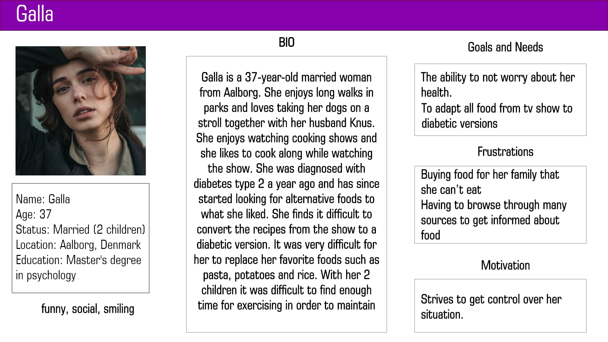
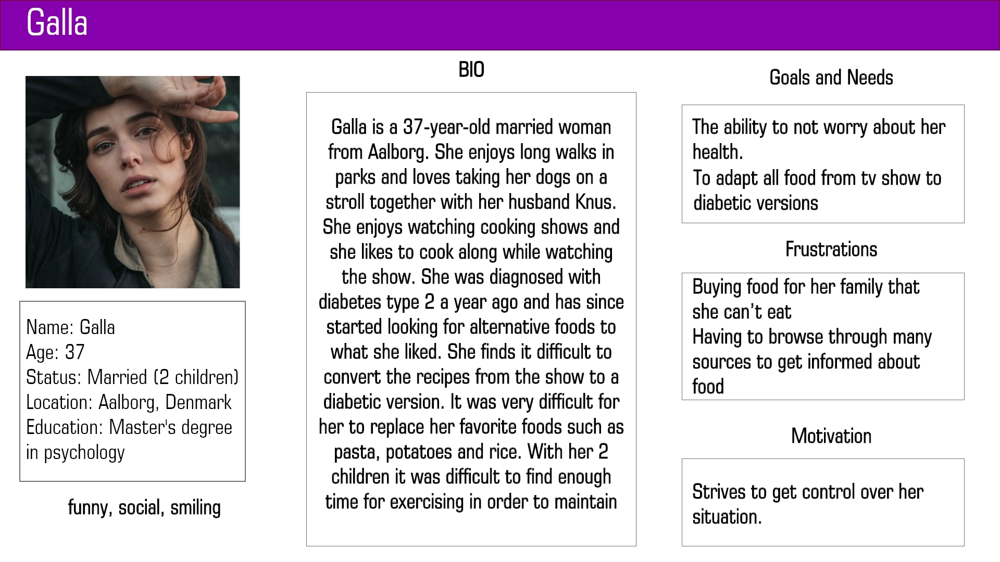

Diabetes WebApp
Problem:
The purpose of the product is to digitize the Diabetes Association's shopping guide, which is a simple guide for helping diabetics and their relatives remember the recommended amounts of sugar, fat and possibly dietary fibre in several selected product groups, when making their daily purchases.
_______________USER RESEARCH
After performing the interviews, the group created personas so that there is reliable and realistic representations of our key audience. We presented their background, motivations, frustrations and goals and needs. On later stage, they helped us come up with features of the app.
 

_________________PROTOTYPING
We were aiming simple and clear design since the focus was on the functionality of the product. We were working with design patterns so we decided the whole app to follow the same pattern as it eases the user and enhances the predictability.